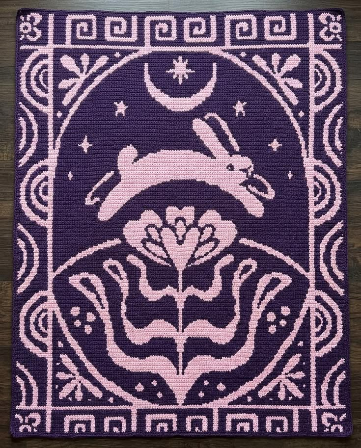

Knitting and crochet are beautiful arts that are just viewed as being able to create sweaters and scarves, but that's not all. It is an art. This page is an introduction to how beautiful it can be and what can be created from it.